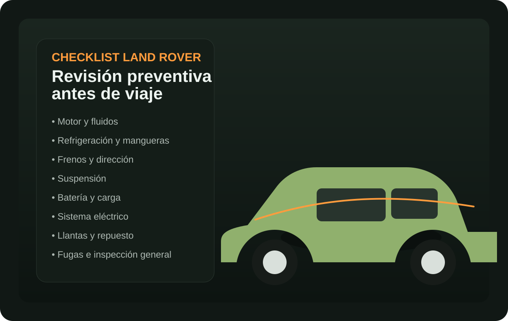

01
Restauración de vehículos clásicos
Devolvemos carácter, estética y coherencia a vehículos con historia o potencial de colección.
Si tu vehículo perdió presencia, valor o fiabilidad, en AUTO FORES lo devolvemos al nivel que merece. Restauramos clásicos, reparamos con criterio técnico y trabajamos Land Rover con enfoque premium.
No vendemos promesas genéricas. Ejecutamos procesos orientados a recuperar la esencia del vehículo y el orgullo de su propietario.
Devolvemos carácter, estética y coherencia a vehículos con historia o potencial de colección.
Soluciones técnicas enfocadas en funcionamiento, durabilidad y confianza real al volante.
Intervenciones sobre modelos nuevos, antiguos y clásicos con criterio propio de la marca.
Más que reparar: reposicionamos el vehículo para que vuelva a verse, sentirse y proyectarse mejor.
Trabajamos para propietarios que valoran la técnica, la presentación y el detalle. La diferencia no está solo en arreglar un vehículo: está en devolverle peso, carácter y credibilidad.
Expertos en restauración de clásicos. Más que reparación, una reconstrucción de valor.
Demuestra transformación, genera deseo y reduce objeciones con una presentación clara del cambio.
Del desgaste visible a una presencia sólida, limpia y premium.


Una intervención enfocada en recuperar carácter, presencia y confianza.


Reducimos fricción: captación, mensaje prellenado, conversación directa y siguiente paso claro.
Nombre, teléfono, vehículo y necesidad principal.
Tu consulta se transforma en un mensaje optimizado para WhatsApp.
Contacto inmediato con AUTO FORES para avanzar rápido.
Se revisa el caso y se orienta el siguiente paso con claridad.
La percepción premium no se declara: se confirma en la experiencia y en el resultado final.
“Buscaba algo serio, no un taller más. Encontré criterio técnico, presencia y un resultado que sí justifica la inversión.”
“Se nota la diferencia desde el trato. AUTO FORES transmite confianza y el vehículo volvió a verse como debía.”
“Lo que más valoro es que entienden el valor del vehículo. No es solo reparar: es devolver presencia y peso real.”
Habla ahora con AUTO FORES y lleva tu caso directamente a WhatsApp.
Si quieres restaurar, reparar o recuperar valor, este es el momento de iniciar la conversación.